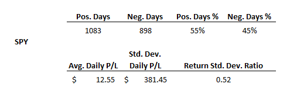
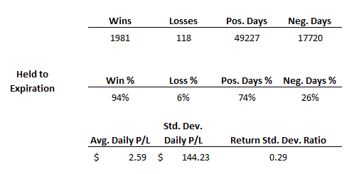
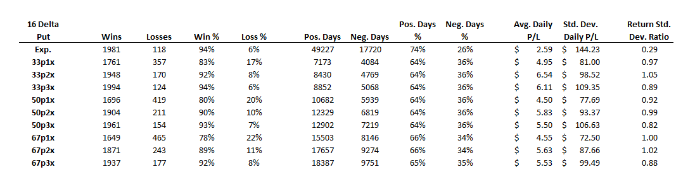

An Analysis of SPY Short Puts
Examining Expected Return and Standard Deviation of Returns
Introduction
In this article we explore the historical performance of short puts in one of the most liquid options markets, SPY, through the lens of average daily return and standard deviation of daily returns.
Methodology
Data for the monthly expiration one standard deviation put between 30 and 60 days to expiration is aggregated from January 2016 to December 2023. Each day a short option position is opened and returns recorded daily through expiration. Quotes and greek caluclations are as of 3:45 PM EST each trading day with data provided by CBOE.
Benchmark
Performance will be compared to 100 shares of SPY over the same period. A ratio of average daily P/L to standard deviation of daily P/L will be used to quantify risk-adjusted returns.
Options
Selling the one standard deviation put and holding through expiration would have been a high probability of success trade with a higher percentage of positive days compared to long stock; however, compared to the underlying itself, selling puts underperformed on a risk-adjusted basis.
Improving Expected Return and Standard Deviation of Returns
Active Management
Closing positions at predefined profit targets and loss thresholds based on credit received resulted in better risk-adjusted returns than holding through expiration and the benchmark. Positions that did not reach a profit target or loss theshold were held through expiration. Profit targets tested were 33%, 50%, and 67% credit received. Loss thresholds tested were 1x, 2x, and 3x credit received.
Conclusion
Selling the one standard deviation put had a high likelihood of success and positive expected return; however, positions held through expiration underperformed the benchmark. Positions actively managed before expiration based on credit received outperformed unmanaged positions and the benchmark on a risk-adjusted basis.
Considerations
This is not financial advice. Past performance is not an indicator of future results. Slippage not accounted for and trading fees not included. Risk of early exercise disregarded.